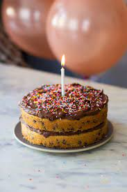

Birthday Cake-Chocolate Chip Cake

Description
Birthdays are definitely a reason to be happy and of course they're meant
to be celebrated. And what is a celebration without a cake???
Incomplete. Utterly incomplete. For as long as I can remember,
I have been eating chocolate cakes (for the most part xD) on my birthdays.
That is exactly why Chocolate cakes are the go to birthday cakes
for me.
This is the reason why I'd like to share this classic chocolate cake recipe,
which is easy to follow along to and very delicious, so very much worth the
process. So, without further ado, let's get into the process of creating this
oh so delicious birthday cake!
Ingredients
Chocolate chip cake
- 2 cups all-purpose flour
- 2 tsp baking powder
- 3/4 cup vegetable oil
- 1 cup castor sugar
- 1 tsp pure vanilla extract
- 2 eggs
- 1/2 cup milk
- 1 cup of chocolate chips
Chocolate cream cheese frosting
- 1 cup cream cheese, softened
- 1/2 cup unsalted butter, softened
- 2 cups icing sugar
- 1/2 cup cocoa powder
Steps
- Pre-heat the oven to 180C. Line two 8″ round cake pan with parchment paper.
- In a bowl, whisk together flour and baking powder.
-
In a separate bowl, beat vegetable oil and castor sugar. Beat in the vanilla.
-
Add eggs, one at a time and beat well after each addition. Mix in the milk.
-
Using a spatula, gently fold in the dry ingredients into the wet ingredients.
Mix only until well combined. Fold in the chocolate chips.
-
Pour the batter into the prepared cake pans. Bake at 180C for 40-45 minutes or until a
skewer inserted into the center comes out clean.
-
For the frosting, beat the butter and cream cheese until the mixture is light and
fluffy.
-
While the mixture is still running, add the sugar in parts. Beat until the frosting is
smooth and fluffy.
- Gradually add the cocoa powder.
- Generously top the cupcakes with frosting once they have cooled completely.